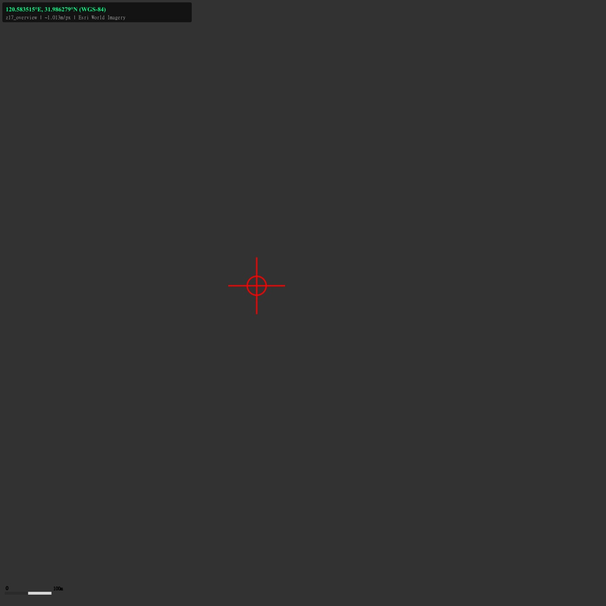
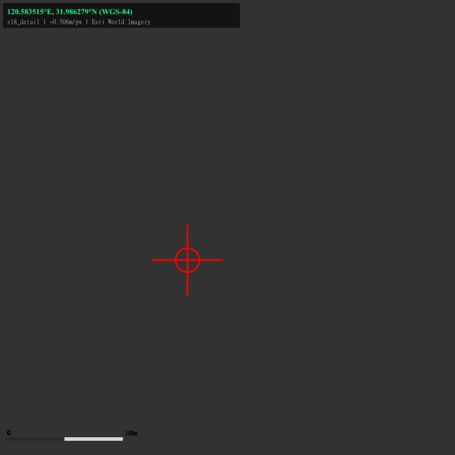
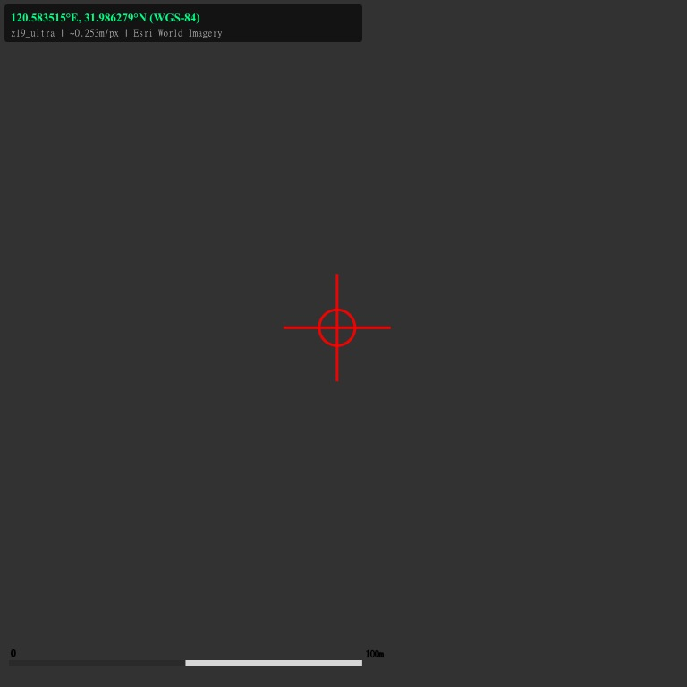
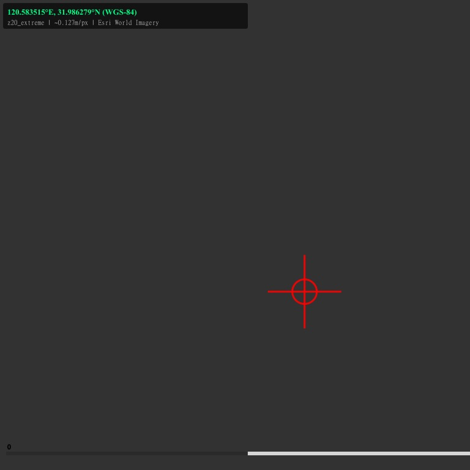

卫星地图核查视图 v2
WGS-84: 120.583515°E, 31.986279°N — 江苏省苏州市张家港市锦丰镇沿江
📍 目标坐标: 120.583515°E, 31.986279°N (WGS-84)
🗺️ 数据源: Esri World Imagery (ArcGIS REST API)
🔴 红色十字 = 目标坐标位置 | 底部比例尺 = 100m
z17 ~1.0m/px 概览
z18 ~0.5m/px 详细
z19 ~0.25m/px 超清
z20 ~0.13m/px 极限
z17_overview
1280x1280px | ~1.013m/px | 覆盖 1297m x 1297m
范围: [120.57770, 120.59143] x [31.98012, 31.99177]

z18_detail
768x768px | ~0.506m/px | 覆盖 389m x 389m
范围: [120.58182, 120.58594] x [31.98478, 31.98828]

z19_ultra
768x768px | ~0.253m/px | 覆盖 194m x 194m
范围: [120.58250, 120.58456] x [31.98537, 31.98711]

z20_extreme
768x768px | ~0.127m/px | 覆盖 97m x 97m
范围: [120.58285, 120.58388] x [31.98595, 31.98682]

⚠️ 注意: 当前为 Esri 免费图源最新影像，无法回溯历史日期。
430/531 新政核查需采购 2025年3-6月存档影像，z18(0.5m)即可满足光伏板面积识别。